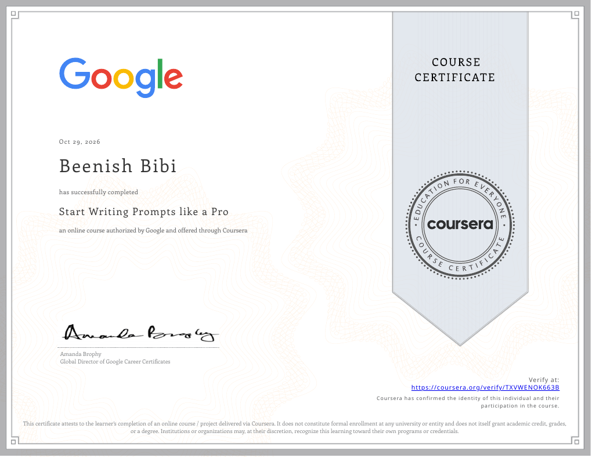

GOOGLE · COURSERA
Start Writing Prompts like a Pro
Completed October 29, 2026.
Verify certificate ↗04 / Training & recognition
Additional training and academic recognition that complement my Computer Science studies.

GOOGLE · COURSERA
Completed October 29, 2026.
Verify certificate ↗ADDITIONAL TRAINING
MS Office Tools · Basic Graphic Designing · IT Technical Training
ACADEMIC RECOGNITION
Merit certificate · Government College Chung; Excellence certificate · GGHS Chung; merit-based scholarship · Qarshi University.